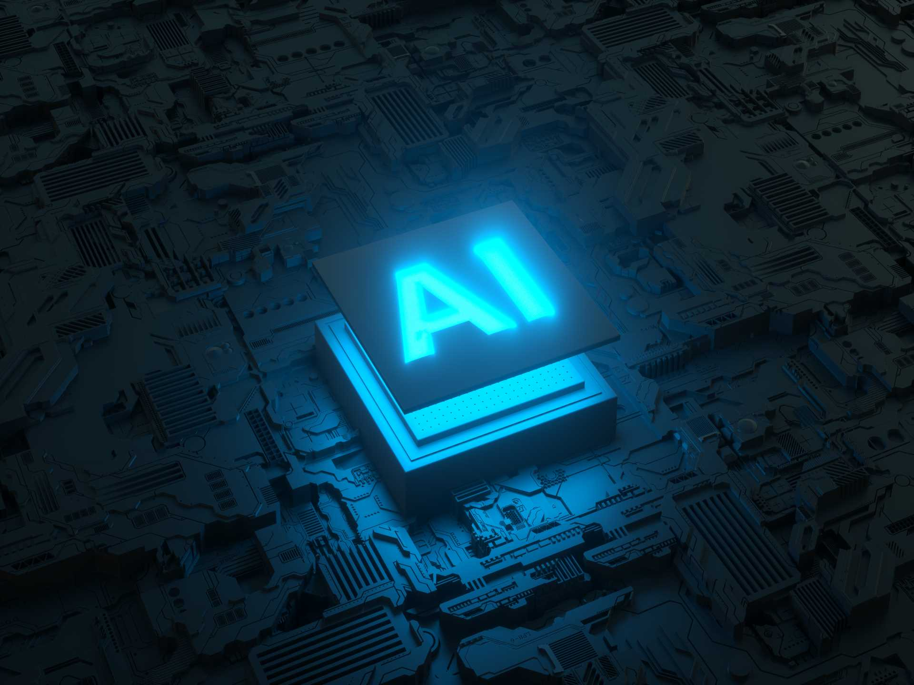

Las empresas que adoptan IA aumentan su productividad en un 40% y reducen costos operativos en un 30%, según un estudio de McKinsey.
La inteligencia artificial optimiza tareas, reduce errores y mejora la toma de decisiones con datos en tiempo real. Invertir en IA permite aumentar productividad, competitividad y adaptabilidad en un mercado en constante evolución.
¿Qué modelos se tienen disponibles?
Erick Del Piero Gonzales
Bachiller en ingeniería Mecatrónica dedicado a la Inteligencia artificial, con 3 años de experiencia en desarrollo de moledos de Machine Learning, manejo de Natural Language Proccesing (NLP), y Computer Vision; aplicados a diferentes rubros de la industria.